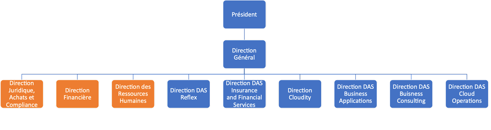

Structure de l'entreprise
Hardis Group est composé d’un Directeur Général, lui-même supervisé par un président. Notre organisation est de sorte à regrouper les activités dans des direction (des DAS = Domaine d’activité stratégique). Il y a cependant des directions supports communes afin d’assurer les tâches administratives.
Entreprise basée initialement à Grenoble, maintenant à l’internationale
Notre groupe se développe davantage à l'internationale avec, dernièrement, l'ouverture d'une filiale en Pologne.
Valeurs de l'entreprise

Enrichissement et variété, au coeur de notre culture !
“On a beaucoup de missions différentes et très variées. En trois ans j’ai pas fait deux fois la même mission et vu deux fois la même techno ! C’est très enrichissant et on apprend tous les jours.”
Aurore
Ambiance de travail et confiance optimal !
“Ce qui me plaît le plus chez Hardis Group, c’est l’ambiance de travail et la confiance accordée au collaborateur.”
Jules